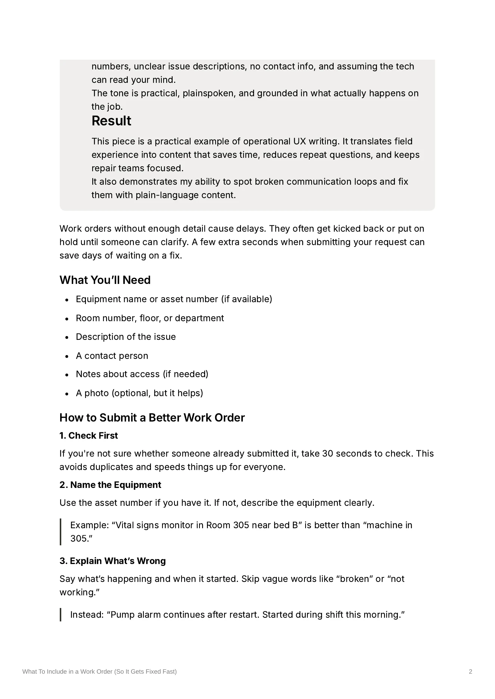

Healthcare Technology · User Education · Internal Documentation
What to Include in a Work Order
A practical guide that helps hospital staff submit better service requests so technicians have the information they need from the start.
The problem
Poorly written work orders were slowing down equipment repairs. Technicians received vague locations, missing asset numbers, unclear descriptions, and no contact information.
That meant extra questions, delayed repairs, and technicians sometimes arriving without enough information to troubleshoot the problem.
The audience
Hospital staff submitting service requests for equipment and the healthcare technology technicians responsible for responding to them.
What I did
I broke the process of writing a useful work order into five straightforward steps based on the problems I saw repeatedly in service requests.
Instead of explaining CMMS fields or writing another policy, I focused on the information a technician needs to find the equipment, understand the problem, and start troubleshooting.
The solution
The guide teaches users to:
- Check for an existing request before creating a duplicate
- Identify the equipment and its location clearly
- Describe what is happening instead of simply writing "broken"
- Include details that could help with troubleshooting
- Provide a contact person for questions or access
The finished documentation
The finished guide combines a short pre-submission checklist with examples and five steps for writing a more useful work order.

The result
The guide addresses a communication gap that was creating unnecessary back-and-forth between the people requesting service and the technicians responding to it.
It gives users enough guidance to submit a useful request without turning a simple work order into another complicated process.
Skills demonstrated
- Technical writing
- User education
- Healthcare technology
- CMMS
- Plain-language writing
- Operational UX writing
- Task-based documentation